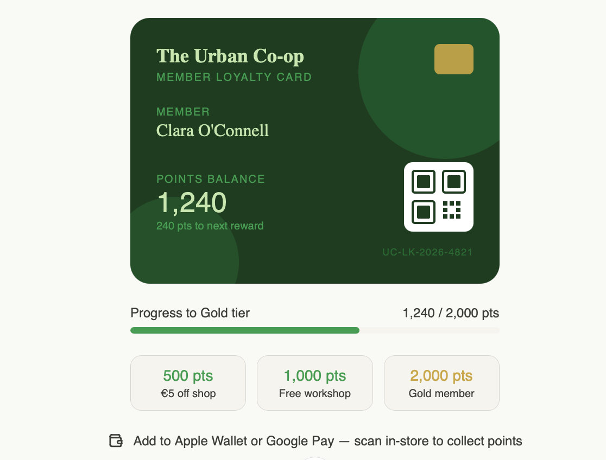
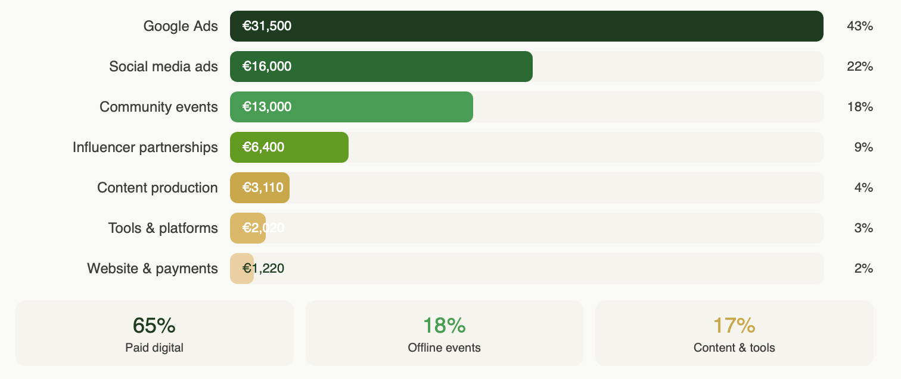

Marketing Strategy of Urban Co-op
Situation & Objective
The Urban Co-op is a Limerick-based social enterprise operating since 2013 as an organic grocery store, wellness hub, and community education space. Despite a strong membership base and clear community positioning, the organisation lacked the digital infrastructure to scale no e-commerce functionality, limited social media presence, and no structured approach to member acquisition or retention.
The objective of this campaign was to address that gap. Over a 12-month period, the strategy was designed to grow active membership, establish a viable online revenue stream, and deepen community engagement without compromising the authenticity that underpins the Co-op's brand equity.
- The campaign was built to deliver against four measurable outcomes:
- Awareness - grow social media following by 30% across Instagram and TikTok.
- Engagement - increase community event attendance by 25%.
- Conversion - boost online order volume by 40% and increase average order value by 5%.
- Retention - grow repeat shoppers and event attendees by 15% through loyalty schemes and community programming.
Strategic Approach
The campaign "Support Local. Eat Well. Co-operate." was positioned not as a promotional initiative but as a brand repositioning. The strategic objective was to shift audience perception of the Co-op from a local retailer to a community movement, making membership feel like an identity choice rather than a transactional decision.
The objective of this campaign was to address that gap. Over a 12-month period, the strategy was designed to grow active membership, establish a viable online revenue stream, and deepen community engagement without compromising the authenticity that underpins the Co-op's brand equity.
- The channel strategy was built around three integrated pillars:
- Grow digital membership and awareness through organic social content, a structured influencer programme, and SEO targeting high-intent local search terms including "organic food Limerick" and "wellness Limerick".
- Drive online sales through a full website redesign featuring e-commerce, click and collect, and a member loyalty portal, supported by geo-targeted Google Performance Max campaigns and automated email flows.
- Strengthen community engagement through a quarterly outdoor event series ("Spring into Sustainability"), monthly wellness workshops, and a UGC campaign (#MyCoopBasket) incentivising members to create and share content organically.
- Retention - grow repeat shoppers and event attendees by 15% through loyalty schemes and community programming.
Google Search Example

Loyalty Card Example
Instagram Page Example
Budget Allocation
- Total campaign budget: €74,030, allocated across paid, owned, and offline channels.
- Google Ads — €31,500, seasonally weighted to peak in May–July (Irish organic growing season) and January–February (consumer health resolution period).
- Social media advertising —€16,000 across Instagram and TikTok, amplifying organic storytelling during high-engagement windows.
- Offline community activation €13,000 covering venue, production, and logistics for quarterly events and monthly in-store programming.
- Influencer partnerships — €6,400 across four Limerick-based micro-influencers selected for audience alignment and community credibility over follower volume.
- Content production and tooling — €7,130 covering website development, CRM, email marketing, analytics, design software, and UGC incentivization.

Strategic Rationale
The campaign is differentiated from conventional approaches in three ways. First, it operates with a single unified brand voice across every channel rather than treating each platform in isolation ensuring consistency of message and compounding brand recall over the 12-month period. Second, it is community-first rather than conversion-first, prioritizing authentic storytelling and genuine member participation over short-term promotional tactics. This aligns directly with the Co-op's business model, which depends on membership loyalty rather than transactional volume. Third, it creates a continuous loop between the Co-op's digital presence and its physical community through click and collect, QR-linked event sign-ups, and a member portal with in-store loyalty card scanning ensuring that online engagement drives real-world footfall and vice versa.
The Co-op operates in a market dominated by retailers with significantly greater resources. The strategic advantage available to it is not budget it is trust, authenticity, and genuine community embeddedness. This campaign is designed to make those qualities scalable.
- The campaign was built to deliver against four measurable outcomes:
- Awareness - grow social media following by 30% across Instagram and TikTok.
- Engagement - increase community event attendance by 25%.
- Conversion - boost online order volume by 40% and increase average order value by 5%.
- Retention - grow repeat shoppers and event attendees by 15% through loyalty schemes and community programming.